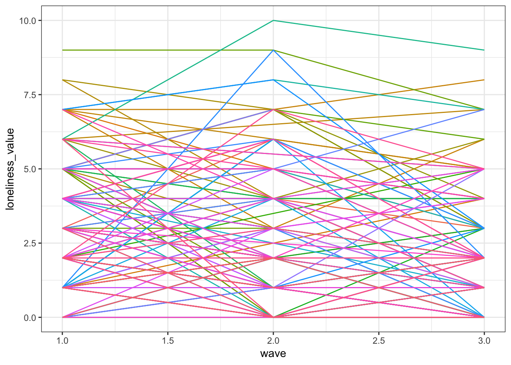

Motivation: This project aims to look at the effect of sociodemographic indicators on mental health among a cohort of Irish residents aged 50+ yrs.
Related Work: This project is a broad examination of the implications of aging on physical and mental health. The inspiration for this analysis was drawn from the group members researhc interests including depression, aging, and chronic diseases. The following link to a page from the American Psychological Association was used as a reference for the variables we chose to analyze. https://www.apa.org/helpcenter/aging-depression.aspx
Questions: Our main questions: Is physical health associated with mental health? Does loneliness change over time among widowed men?
Evolution of questions: As we created the graphs we decided to also explore variations according to sex. For example, we also explored loneliness among widowed women over time and saw that loneliness increased more for men compared to women.
Data Source: The data was obtained from The Irish Longitudinal Study on Ageing (TILDA) Waves 1, 2, and 3. Here is a link to the dataset https://www.icpsr.umich.edu/icpsrweb/ICPSR/series/726
Importing data
load("./data/Wave 1/DS0001/34315-0001-Data.rda")
load("./data/Wave 2/DS0001/37105-0001-Data.rda")
load("./data/Wave 3/DS0001/37106-0001-Data.rda")
wave_1_data = da34315.0001
wave_2_data = da37105.0001
wave_3_data = da37106.0001Exploratory Analysis:
Creating Graphs
countplot = wave_3_data %>%
select(PH001, PH002, SEX) %>%
mutate(physical = case_when(
PH001 == "(01) Excellent" ~ "Excellent",
PH001 == "(02) Very Good" ~ "Very Good",
PH001 == "(03) Good" ~ "Good",
PH001 == "(04) Fair" ~ "Fair",
PH001 == "(05) Poor" ~ "Poor"),
mental = case_when(
PH002 == "(01) Excellent" ~ "Excellent",
PH002 == "(02) Very Good" ~ "Very Good",
PH002 == "(03) Good" ~ "Good",
PH002 == "(04) Fair" ~ "Fair",
PH002 == "(05) Poor" ~ "Poor"),
sex = case_when(
SEX == "(1) Male" ~ "Male",
SEX == "(2) Female" ~ "Female"
),
physical = factor(physical, levels = c("Excellent", "Very Good", "Good", "Fair", "Poor")),
mental = factor(mental, levels = c("Excellent", "Very Good", "Good", "Fair", "Poor"))
) %>%
select(-PH001, -PH002, -SEX)
plot_1 = countplot %>%
ggplot(aes(x = physical, y = mental, color = ..n..)) +
geom_count(alpha = 0.8) +
labs(
x = "Self-Rated Physical Health",
y = "Self-Rated Mental Health"
) +
facet_grid(~sex) +
theme_bw() +
theme(legend.position = "none",
axis.text.x = element_text(angle = 40, hjust = 1))
ggplotly(plot_1)wave_1_data = wave_1_data %>%
mutate(MHUCLA_LONELINESS_1 = MHUCLA_LONELINESS)
wave_2_data = wave_2_data %>%
mutate(MHUCLA_LONELINESS_2 = MHUCLA_LONELINESS)
wave_3_data = wave_3_data %>%
mutate(MHUCLA_LONELINESS_3 = MHUCLA_LONELINESS)
spaghetti =
merge(wave_1_data, wave_2_data, by = "ID") %>%
merge(wave_3_data, by = "ID") %>%
select(ID, SEX.x, CS006, MHUCLA_LONELINESS_1, MHUCLA_LONELINESS_2, MHUCLA_LONELINESS_3) %>%
arrange(ID) %>%
mutate(sex = case_when(
SEX.x == "(1) Male" ~ "Male",
SEX.x == "(2) Female" ~ "Female"
),
marital_status = case_when(
CS006 == "(1) Married" ~ "Married",
CS006 == "(2) Living with a partner as if married" ~ "Cohabitation",
CS006 == "(3) Single(never married)" ~ "Single",
CS006 == "(4) Separated" ~ "Separated",
CS006 == "(5) Divorced" ~ "Divorced",
CS006 == "(6) Widowed" ~ "Widowed"
)) %>%
filter(marital_status == "Widowed") %>%
select(-SEX.x, -CS006) %>%
gather(key = wave, value = loneliness_value, MHUCLA_LONELINESS_1:MHUCLA_LONELINESS_3) %>%
mutate(wave = case_when(
wave == "MHUCLA_LONELINESS_1" ~ 1,
wave == "MHUCLA_LONELINESS_2" ~ 2,
wave == "MHUCLA_LONELINESS_3" ~ 3
)) %>%
janitor::clean_names()
spaghetti %>%
filter(sex == "Male", loneliness_value != "NA") %>%
ggplot(aes(x = wave, y = loneliness_value, color = id)) +
geom_line() +
theme_bw() +
theme(legend.position = "none")
# ICD-10: bar graph of proportions of each ICD-10 code to determine which ICD-10 diagnosis accounts for the greatest burden of disease in our population. We can potentially facet by sex to see if the burden is different for males and females.
bar_graph =
wave_3_data %>%
select(ID, ICD10_01:ICD10_16) %>%
summarize(total_01 = sum(ICD10_01), total_02 = sum(ICD10_02), total_03 = sum(ICD10_03),
total_04 = sum(ICD10_04), total_05 = sum(ICD10_05), total_06 = sum(ICD10_06),
total_07 = sum(ICD10_07), total_08 = sum(ICD10_08), total_09 = sum(ICD10_09),
total_10 = sum(ICD10_10), total_11 = sum(ICD10_11), total_12 = sum(ICD10_12),
total_13 = sum(ICD10_13), total_14 = sum(ICD10_14), total_15 = sum(ICD10_15),
total_16 = sum(ICD10_16)) %>%
gather(key = icd_code, value = total, total_01:total_16) %>%
separate(icd_code, into = c("total_char","icd_code"), sep = "_") %>%
select(-total_char) %>%
mutate(burden = total/sum(total)*100) %>%
mutate(disease = case_when(
icd_code == "01" ~ "Infectious diseases",
icd_code == "02" ~ "Neoplasms",
icd_code == "03" ~ "Blood diseases",
icd_code == "04" ~ "Nutritional/metabolic diseases",
icd_code == "05" ~ "Mental/behavioral disorders",
icd_code == "06" ~ "Nervous system diseases",
icd_code == "07" ~ "Eye diseases",
icd_code == "08" ~ "Ear diseases",
icd_code == "09" ~ "Circulatory system diseases",
icd_code == "10" ~ "Respiratory system diseases",
icd_code == "11" ~ "Digestive system diseases",
icd_code == "12" ~ "Skin diseases",
icd_code == "13" ~ "Musculoskeletal system diseases",
icd_code == "14" ~ "Genitourinary system diseases",
icd_code == "15" ~ "Perinatal conditions",
icd_code == "16" ~ "Congenital malformations"
))
plot_2 = bar_graph %>%
ggplot(aes(x = reorder(disease, -burden), y = burden)) +
geom_bar(stat = "identity") +
labs(
title = "Proportion of people with specified diseases",
x = "Disease",
y = "Proportion (%)"
) +
viridis::scale_color_viridis(
name = "Location",
discrete = TRUE
) +
theme_bw() +
theme(axis.text.x = element_text(angle = 90, size = 7))
ggplotly(plot_2)### Baseline 0
baseline_loneliness_0 = wave_1_data %>%
filter(MHUCLA_LONELINESS_1 == 0 & SEX == "(1) Male" & CS006 == "(6) Widowed") %>%
select(ID, SEX, CS006, MHUCLA_LONELINESS_1) %>%
merge(wave_2_data, by = "ID") %>%
merge(wave_3_data, by = "ID") %>%
select(ID, MHUCLA_LONELINESS_1, MHUCLA_LONELINESS_2, MHUCLA_LONELINESS_3) %>%
gather(key = wave, value = loneliness_value, MHUCLA_LONELINESS_1:MHUCLA_LONELINESS_3) %>%
mutate(wave = case_when(
wave == "MHUCLA_LONELINESS_1" ~ 1,
wave == "MHUCLA_LONELINESS_2" ~ 2,
wave == "MHUCLA_LONELINESS_3" ~ 3
)) %>%
filter(loneliness_value != "NA")
baseline_0 = baseline_loneliness_0 %>%
ggplot(aes(x = wave, y = loneliness_value)) +
geom_smooth(se = FALSE)
### Baseline 1
baseline_loneliness_1 = wave_1_data %>%
filter(MHUCLA_LONELINESS_1 == 1 & SEX == "(1) Male" & CS006 == "(6) Widowed") %>%
select(ID, SEX, CS006, MHUCLA_LONELINESS_1) %>%
merge(wave_2_data, by = "ID") %>%
merge(wave_3_data, by = "ID") %>%
select(ID, MHUCLA_LONELINESS_1, MHUCLA_LONELINESS_2, MHUCLA_LONELINESS_3) %>%
gather(key = wave, value = loneliness_value, MHUCLA_LONELINESS_1:MHUCLA_LONELINESS_3) %>%
mutate(wave = case_when(
wave == "MHUCLA_LONELINESS_1" ~ 1,
wave == "MHUCLA_LONELINESS_2" ~ 2,
wave == "MHUCLA_LONELINESS_3" ~ 3
)) %>%
filter(loneliness_value != "NA")
baseline_1 = baseline_loneliness_1 %>%
ggplot(aes(x = wave, y = loneliness_value)) +
geom_smooth(se = FALSE)
### Baseline 2
baseline_loneliness_2 = wave_1_data %>%
filter(MHUCLA_LONELINESS_1 == 2 & SEX == "(1) Male" & CS006 == "(6) Widowed") %>%
select(ID, SEX, CS006, MHUCLA_LONELINESS_1) %>%
merge(wave_2_data, by = "ID") %>%
merge(wave_3_data, by = "ID") %>%
select(ID, MHUCLA_LONELINESS_1, MHUCLA_LONELINESS_2, MHUCLA_LONELINESS_3) %>%
gather(key = wave, value = loneliness_value, MHUCLA_LONELINESS_1:MHUCLA_LONELINESS_3) %>%
mutate(wave = case_when(
wave == "MHUCLA_LONELINESS_1" ~ 1,
wave == "MHUCLA_LONELINESS_2" ~ 2,
wave == "MHUCLA_LONELINESS_3" ~ 3
)) %>%
filter(loneliness_value != "NA")
baseline_2 = baseline_loneliness_2 %>%
ggplot(aes(x = wave, y = loneliness_value)) +
geom_smooth(se = FALSE)
### Baseline 3
baseline_loneliness_3 = wave_1_data %>%
filter(MHUCLA_LONELINESS_1 == 3 & SEX == "(1) Male" & CS006 == "(6) Widowed") %>%
select(ID, SEX, CS006, MHUCLA_LONELINESS_1) %>%
merge(wave_2_data, by = "ID") %>%
merge(wave_3_data, by = "ID") %>%
select(ID, MHUCLA_LONELINESS_1, MHUCLA_LONELINESS_2, MHUCLA_LONELINESS_3) %>%
gather(key = wave, value = loneliness_value, MHUCLA_LONELINESS_1:MHUCLA_LONELINESS_3) %>%
mutate(wave = case_when(
wave == "MHUCLA_LONELINESS_1" ~ 1,
wave == "MHUCLA_LONELINESS_2" ~ 2,
wave == "MHUCLA_LONELINESS_3" ~ 3
)) %>%
filter(loneliness_value != "NA")
baseline_3 = baseline_loneliness_3 %>%
ggplot(aes(x = wave, y = loneliness_value)) +
geom_smooth(se = FALSE)
### Baseline 4
baseline_loneliness_4 = wave_1_data %>%
filter(MHUCLA_LONELINESS_1 == 4 & SEX == "(1) Male" & CS006 == "(6) Widowed") %>%
select(ID, SEX, CS006, MHUCLA_LONELINESS_1) %>%
merge(wave_2_data, by = "ID") %>%
merge(wave_3_data, by = "ID") %>%
select(ID, MHUCLA_LONELINESS_1, MHUCLA_LONELINESS_2, MHUCLA_LONELINESS_3) %>%
gather(key = wave, value = loneliness_value, MHUCLA_LONELINESS_1:MHUCLA_LONELINESS_3) %>%
mutate(wave = case_when(
wave == "MHUCLA_LONELINESS_1" ~ 1,
wave == "MHUCLA_LONELINESS_2" ~ 2,
wave == "MHUCLA_LONELINESS_3" ~ 3
)) %>%
filter(loneliness_value != "NA")
baseline_4 = baseline_loneliness_4 %>%
ggplot(aes(x = wave, y = loneliness_value)) +
geom_smooth(se = FALSE)
### Baseline 5
baseline_loneliness_5 = wave_1_data %>%
filter(MHUCLA_LONELINESS_1 == 5 & SEX == "(1) Male" & CS006 == "(6) Widowed") %>%
select(ID, SEX, CS006, MHUCLA_LONELINESS_1) %>%
merge(wave_2_data, by = "ID") %>%
merge(wave_3_data, by = "ID") %>%
select(ID, MHUCLA_LONELINESS_1, MHUCLA_LONELINESS_2, MHUCLA_LONELINESS_3) %>%
gather(key = wave, value = loneliness_value, MHUCLA_LONELINESS_1:MHUCLA_LONELINESS_3) %>%
mutate(wave = case_when(
wave == "MHUCLA_LONELINESS_1" ~ 1,
wave == "MHUCLA_LONELINESS_2" ~ 2,
wave == "MHUCLA_LONELINESS_3" ~ 3
)) %>%
filter(loneliness_value != "NA")
baseline_5 = baseline_loneliness_5 %>%
ggplot(aes(x = wave, y = loneliness_value)) +
geom_smooth(se = FALSE)
### Baseline 6
baseline_loneliness_6 = wave_1_data %>%
filter(MHUCLA_LONELINESS_1 == 6 & SEX == "(1) Male" & CS006 == "(6) Widowed") %>%
select(ID, SEX, CS006, MHUCLA_LONELINESS_1) %>%
merge(wave_2_data, by = "ID") %>%
merge(wave_3_data, by = "ID") %>%
select(ID, MHUCLA_LONELINESS_1, MHUCLA_LONELINESS_2, MHUCLA_LONELINESS_3) %>%
gather(key = wave, value = loneliness_value, MHUCLA_LONELINESS_1:MHUCLA_LONELINESS_3) %>%
mutate(wave = case_when(
wave == "MHUCLA_LONELINESS_1" ~ 1,
wave == "MHUCLA_LONELINESS_2" ~ 2,
wave == "MHUCLA_LONELINESS_3" ~ 3
)) %>%
filter(loneliness_value != "NA")
baseline_6 = baseline_loneliness_6 %>%
ggplot(aes(x = wave, y = loneliness_value)) +
geom_smooth(se = FALSE)
### Baseline 7
baseline_loneliness_7 = wave_1_data %>%
filter(MHUCLA_LONELINESS_1 == 7 & SEX == "(1) Male" & CS006 == "(6) Widowed") %>%
select(ID, SEX, CS006, MHUCLA_LONELINESS_1) %>%
merge(wave_2_data, by = "ID") %>%
merge(wave_3_data, by = "ID") %>%
select(ID, MHUCLA_LONELINESS_1, MHUCLA_LONELINESS_2, MHUCLA_LONELINESS_3) %>%
gather(key = wave, value = loneliness_value, MHUCLA_LONELINESS_1:MHUCLA_LONELINESS_3) %>%
mutate(wave = case_when(
wave == "MHUCLA_LONELINESS_1" ~ 1,
wave == "MHUCLA_LONELINESS_2" ~ 2,
wave == "MHUCLA_LONELINESS_3" ~ 3
)) %>%
filter(loneliness_value != "NA")
baseline_7 = baseline_loneliness_7 %>%
ggplot(aes(x = wave, y = loneliness_value)) +
geom_smooth(se = FALSE)
### Baseline 8
baseline_loneliness_8 = wave_1_data %>%
filter(MHUCLA_LONELINESS_1 == 8 & SEX == "(1) Male" & CS006 == "(6) Widowed") %>%
select(ID, SEX, CS006, MHUCLA_LONELINESS_1) %>%
merge(wave_2_data, by = "ID") %>%
merge(wave_3_data, by = "ID") %>%
select(ID, MHUCLA_LONELINESS_1, MHUCLA_LONELINESS_2, MHUCLA_LONELINESS_3) %>%
gather(key = wave, value = loneliness_value, MHUCLA_LONELINESS_1:MHUCLA_LONELINESS_3) %>%
mutate(wave = case_when(
wave == "MHUCLA_LONELINESS_1" ~ 1,
wave == "MHUCLA_LONELINESS_2" ~ 2,
wave == "MHUCLA_LONELINESS_3" ~ 3
)) %>%
filter(loneliness_value != "NA")
baseline_8 = baseline_loneliness_8 %>%
ggplot(aes(x = wave, y = loneliness_value)) +
geom_smooth(se = FALSE)
### Baseline 9
baseline_loneliness_9 = wave_1_data %>%
filter(MHUCLA_LONELINESS_1 == 9 & SEX == "(1) Male" & CS006 == "(6) Widowed") %>%
select(ID, SEX, CS006, MHUCLA_LONELINESS_1) %>%
merge(wave_2_data, by = "ID") %>%
merge(wave_3_data, by = "ID") %>%
select(ID, MHUCLA_LONELINESS_1, MHUCLA_LONELINESS_2, MHUCLA_LONELINESS_3) %>%
gather(key = wave, value = loneliness_value, MHUCLA_LONELINESS_1:MHUCLA_LONELINESS_3) %>%
mutate(wave = case_when(
wave == "MHUCLA_LONELINESS_1" ~ 1,
wave == "MHUCLA_LONELINESS_2" ~ 2,
wave == "MHUCLA_LONELINESS_3" ~ 3
)) %>%
filter(loneliness_value != "NA")
baseline_9 = baseline_loneliness_9 %>%
ggplot(aes(x = wave, y = loneliness_value)) +
geom_smooth(se = FALSE)
### Baseline 10
baseline_loneliness_10 = wave_1_data %>%
filter(MHUCLA_LONELINESS_1 == 10 & SEX == "(1) Male" & CS006 == "(6) Widowed") %>%
select(ID, SEX, CS006, MHUCLA_LONELINESS_1) %>%
merge(wave_2_data, by = "ID") %>%
merge(wave_3_data, by = "ID") %>%
select(ID, MHUCLA_LONELINESS_1, MHUCLA_LONELINESS_2, MHUCLA_LONELINESS_3) %>%
gather(key = wave, value = loneliness_value, MHUCLA_LONELINESS_1:MHUCLA_LONELINESS_3) %>%
mutate(wave = case_when(
wave == "MHUCLA_LONELINESS_1" ~ 1,
wave == "MHUCLA_LONELINESS_2" ~ 2,
wave == "MHUCLA_LONELINESS_3" ~ 3
)) %>%
filter(loneliness_value != "NA")
baseline_10 = baseline_loneliness_10 %>%
ggplot(aes(x = wave, y = loneliness_value)) +
geom_smooth(se = FALSE) + ylim(0, 10)
plot_3 = (baseline_0 + baseline_1 + baseline_2 + baseline_3 + baseline_4 + baseline_5 + baseline_6 + baseline_7 + baseline_8 + baseline_9)
ggplotly(plot_3)## `geom_smooth()` using method = 'loess' and formula 'y ~ x'## Warning in simpleLoess(y, x, w, span, degree = degree, parametric =
## parametric, : span too small. fewer data values than degrees of freedom.## Warning in simpleLoess(y, x, w, span, degree = degree, parametric =
## parametric, : pseudoinverse used at 0.99## Warning in simpleLoess(y, x, w, span, degree = degree, parametric =
## parametric, : neighborhood radius 1.01## Warning in simpleLoess(y, x, w, span, degree = degree, parametric =
## parametric, : reciprocal condition number 0## Warning in simpleLoess(y, x, w, span, degree = degree, parametric =
## parametric, : There are other near singularities as well. 4.0401Discussion:
Graph 1: We anticipated that those who felt they had good physical health would also have good mental health and vice versa. From Graph 1 Self-rated physical and mental health are correlated Most older adults in this population report having good or very good physical and mental health Same for males and females Graph 2: Of all the incident diseases, the top 4 are: Circulatory system diseases Eye diseases Nutritional/metabolic diseases Musculoskeletal system diseases There were no incident cases of: Congenital malformations Ear diseases Infectious diseases Perinatal conditions Skin conditions Graph 3: